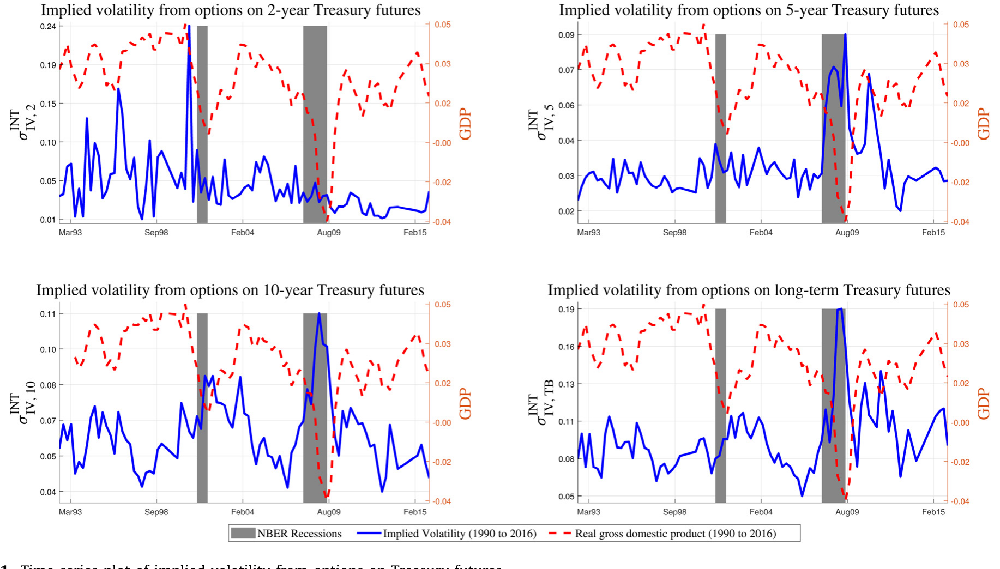
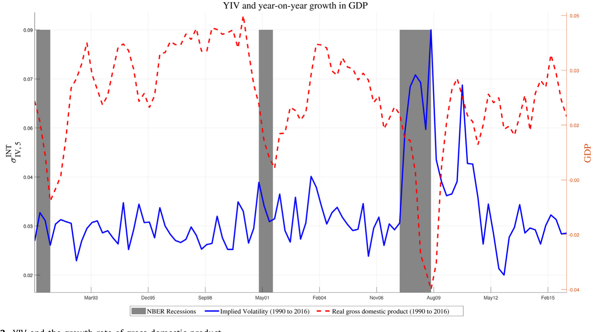
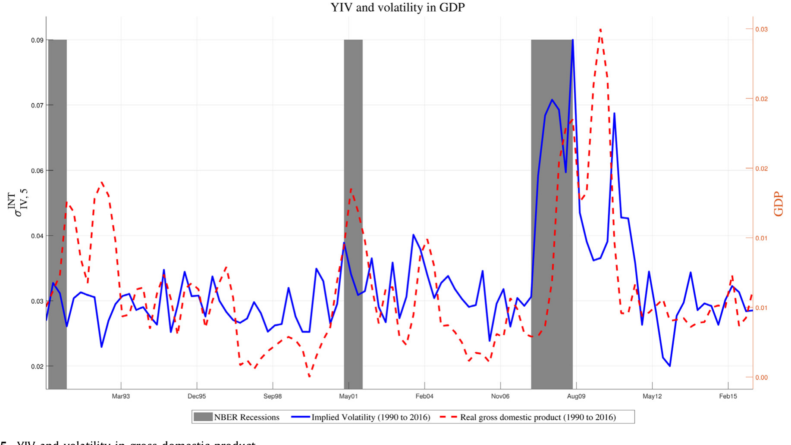
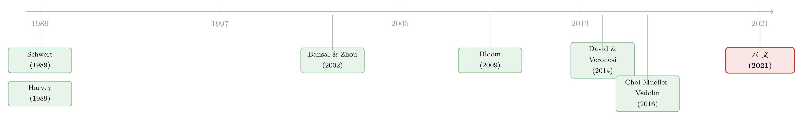

国债期权里那点「波动」，悄悄预告了未来一年的经济
本文读的是 Cremers, Fleckenstein & Gandhi (2021, Journal of Financial Economics)：五年期国债期货期权的平价隐含波动率（作者称之为「国债收益率隐含波动率」，YIV）不仅能预测未来一年 GDP 等宏观变量的增长率，还能预测它们的波动率——而且在控制了期限利差、信用利差、股票收益、VIX 等一长串「老牌预测变量」之后依然稳健。一个直接可观测、每天都在更新的市场价格，成了刻画未来经济风险的有效状态变量。
1 引言：一个被忽略的「温度计」
把金融市场和实体经济连起来，是金融经济学家几十年来念念不忘的一件事。逻辑其实很朴素：金融工具的价格里，装着市场对未来经济的预期；既然如此，那些前瞻性的金融市场变量，理应能帮我们预测真实的经济活动。
于是过去三四十年，人们几乎把能想到的金融变量都拿来「试」了一遍——期限利差、信用利差、股票收益、股市隐含波动率……论文层出不穷。但 Stock and Watson (2003) 那篇著名的综述给出的结论却相当扫兴：这些变量的预测力，只在某些国家、某些时段、对某些指标才显著，没有哪一个能稳定地、跨时段地预测产出增长，尤其是在一个季度以上的较长视野里。
更尴尬的是另一件事。人们关心的从来不只是经济会不会变差，还有经济会不会变得更动荡——也就是宏观变量的波动率。可在这个问题上，文献几乎是沉默的。Schwert (1989) 很早就试图把金融波动和宏观波动联系起来，结果大体上是失败的。换句话说：用金融变量预测增长率，勉强算半个老问题；而用金融变量预测波动率，几乎是一片空白。
这就是本文要钻进去的那道缝隙。
2 主角登场：为什么是五年期国债期权？
作者的答案，藏在一个大多数股票研究者很少正眼看的市场里——国债衍生品市场。
首先，国债市场是全世界最大、最深、最流动的市场之一，它既是国债本身的交易场所，又是无数其他金融证券的定价基准。利率的不确定性一旦升高，几乎会传导到经济的每一个角落。所以从国债衍生品里「读」出来的利率不确定性，天然就是预测总体经济状况的好候选。
接着，一个自然的问题是：怎么把「利率不确定性」做成一个可观测的数？作者的做法朴素得近乎优雅——直接用期权的隐含波动率。具体来说，是五年期国债期货的平价期权（at-the-money）隐含波动率，作者给它起名「国债收益率隐含波动率（Treasury yield implied volatility, YIV）」，记作 \(\sigma^{IIVN}_{T5}\)。
为什么偏偏是五年期？这是全篇一个不起眼却关键的选择。原因有二：其一，五年期国债期货与期权是整个国债衍生品里最大、最活跃的——2016 年五年期合约的日均成交量超过 75 万张，占整个国债期货市场近 40%。其二，Brandt et al. (2007) 与 Mizrach and Neely (2006) 都发现，国债期货市场的价格发现主要发生在五年期合约上。也就是说，五年期那点「波动」，是信息最浓、最先对宏观新闻做出反应的地方——典型情况下，平价期权在宏观消息发布后十秒内就会调整。

Figure 1: Time series plot of implied volatility from options on Treasury futures
这张图很能说明问题。蓝线是各期限国债期权的 YIV，红虚线是实际 GDP 的同比增速，灰色阴影是 NBER 衰退期。你会发现：YIV 在每一次衰退和金融危机时都高高耸起；而且不同期限的 YIV 彼此并不高度相关——长期国债（TB）期权的隐含波动率甚至和二、五、十年期的 YIV 负相关（相关系数约 −0.19 到 −0.24，都在 1% 水平显著）。更有意思的是，二年期 YIV 与 GDP 增速正相关，而五年、十年、长期 YIV 都是负相关。其中，五年期 YIV 与实际 GDP 增速的同期相关系数高达 −45%（1% 水平显著），是所有期限里最强的。
这个 −45% 的同期相关，加上五年期合约最流动、价格发现也最集中——三条理由叠在一起，作者从此把笔墨集中到五年期 YIV 上。下文若不特别说明，YIV 就指五年期 YIV。
这里有一个容易被忽略的设计细节。作者每天只挑那些到期日在 3/6/9/12 月季度循环里、行权价最贴近平价的看涨与看跌期权，剔除离到期不足一周的合约，再用 Black (1976) 商品期权定价模型反解出隐含波动率，做「在值程度加权平均」，最后按月汇总，得到 1990 年 5 月至 2016 年 11 月的月度序列。因为标的永远是「下一个最近的季度合约」，这套做法巧妙地避开了期权到期时间长短与波动率期限结构的混淆。
3 识别策略：两个看似简单、其实少见的预测回归
本文不是结构模型论文，它的「识别」就是干净利落的预测回归（predictive regression）：用当期的 YIV，去预测未来 \(h\) 个月（\(h\) 从 3 个月一路取到 5 年）的宏观变量。关键在于回归的左边放什么——作者放了两样东西：
- 一是未来的增长率（如 GDP 同比增速）；
- 二是未来的波动率（用 12 个月滚动窗口估计的 GDP 增速波动）。
同一个解释变量、两套被解释变量，这正是本文区别于大多数前作的地方。过去的文献基本只盯着增长率；而能同时、稳定地预测增长率和波动率的金融变量，几乎找不到第二个。
但真正关键的一步，在于作者怎么证明「这不是 YIV 在偷别人的功劳」。预测回归最大的隐患是遗漏变量：万一 YIV 只是期限利差或信用利差的影子呢？于是作者把文献里所有叫得上名字的预测变量都拉进来当控制——当期的增长率与波动率、短期利率的水平与一阶差分（Ang et al., 2006）、各种期限利差、信用利差（Gilchrist and Zakrajsek, 2012; Culp et al., 2018）、股票收益、股市隐含波动率 VIX（Bekaert et al., 2013）、新屋开工……一个不落。
结论很硬气：在这套「控制变量动物园」里，有些变量确实能预测增长率，有些能预测波动率，但没有任何一个能像 YIV 这样，在所有视野上同时稳定地预测两者。比如期限利差能预测 GDP 增速、却预测不了 GDP 波动率；股票收益能预测增速、却与未来波动率无关；VIX 能帮着预测增速、却预测不了更高的波动率——这反过来说明 VIX 抓住的更多是风险厌恶而非经济不确定性，与 Carr and Wu (2009)、Bekaert and Hoerova (2014) 的结论一致。
4 主要结果：1.12% 与 0.30% 的故事
把数字摆出来，故事才有重量。
第一，YIV 预测更差的增长。 在样本里，YIV 提高一个标准差，对应未来一年 GDP 年化增速下降 1.12%。这个量级有多大？要知道整个样本期 GDP 的平均年增速也才 2.53%——一个标准差的利率不确定性冲击，几乎能吃掉将近一半的平均增长。而且在一年视野上，单靠 YIV 一个变量就能解释未来 GDP 增速约 39% 的变异。

Figure 2: YIV and the growth rate of gross domestic product
第二，也是更新颖的，YIV 预测更高的波动。 YIV 提高一个标准差，未来一年 GDP 的年化波动率上升约 0.30%——对照样本里 GDP 年化波动率本身只有 1.79%，这同样是经济上显著的。在一年视野里，YIV 单独就能解释未来 GDP 波动约 28% 的变异。考虑到「用金融波动预测宏观波动」此前基本以失败告终，这是本文最有分量的一拳。

Figure 5: YIV and volatility in gross domestic product
第三，这不是 GDP 一个变量的偶然。 把镜头切到工业生产（IND）、消费（CON）、就业（EMP），故事照样成立。YIV 提高一个标准差，对应未来一年：工业生产增速下降 2.53%、消费下降 1.26%、就业下降 1.26%；而在一年视野上，YIV 单独解释了这三者未来增速约 34%、35%、47% 的变异（就业那个 47% 尤其漂亮）。在波动率一侧，一个标准差的 YIV 对应工业生产、消费、就业未来年化波动率分别上升 0.98%、0.34%、0.26%。
一句话概括：在增长率与波动率、在 GDP 与工业生产/消费/就业、在 3 个月到 5 年的不同视野——这四个维度的「网格」里，YIV 是唯一一个格子全部填满的金融变量。
至于稳健性，作者几乎把能想到的攻击都自己先打了一遍：用不重叠观测（避免重叠样本带来的伪相关）、剔除 2007–2009 全球金融危机、改变预测视野、换一种波动率估计方法、做样本外检验；还把二年期、十年期、长期国债期权的隐含波动率，以及 Choi et al. (2016) 的国债方差风险溢价测度都塞进去当控制——加进任何一个或全部，对 YIV 的系数和显著性都只有边际影响。
5 文献脉络：从「预测增长」到「预测波动」
把这篇论文放回它所在的研究河流里，脉络其实很清晰。
最早的一支，是用金融变量预测增长率。Harvey (1989) 发现债券与股票市场能预报经济增长，Estrella and Hardouvelis (1991) 把期限利差与未来产出钉在一起，后来 Ang et al. (2006) 系统地问「收益率曲线到底告诉了我们什么 GDP 增长的信息」。这一支硕果累累，却被 Stock and Watson (2003) 的综述泼了盆冷水：稳定性太差。

与此同时，另一支在问利率不确定性到底从哪来、又意味着什么。Bansal and Zhou (2002)、Ang and Bekaert (2002)、Dai and Singleton (2002)、Dai et al. (2007) 这些带制度转换（regime shifts）的期限结构模型，理论上都暗示利率不确定性与商业周期强烈共振，是刻画实体经济的重要状态变量。再往后，研究者开始把二阶矩（波动率）本身当作信息源：Bloom (2009) 的「不确定性冲击」、Bakshi et al. (2011) 用期权组合反推的远期方差、Jurado et al. (2015) 用上百个变量去度量宏观不确定性。
而把这两支真正接上、又离本文最近的，是 David and Veronesi (2014)。他们构建了一个均衡模型：市场参与者在动态学习经济与政策变量，模型推出国债市场的隐含波动率与衰退概率、短期利率变化、通胀不确定性、通缩概率都正相关。这等于在理论上画好了一条「利率隐含波动率 → 实体经济」的箭头。
但 David and Veronesi (2014) 并没有把国债隐含波动率直接和未来的增长率或波动率连起来做实证。这篇论文站的，正是这个位置：它接过那条理论箭头，第一次用直接可观测的市场价格，实证地证明国债隐含波动率能同时预测宏观变量的增长率与波动率。和 Choi et al. (2016) 这类用债券方差风险溢价的研究相比，本文的测度更「素」——直接从期权市场价格里读出来，不需要再去拆分风险溢价。
（关于「波动率本身预报衰退」这条线，可参见《油价的「波动」，比油价本身更早预言衰退》；关于从期权价格里把对未来的「恐惧」解出来，可参见《把「这一次会议」的恐惧，从期权价格里解出来》与《利率触到地板那天，不确定性开始压低通胀》。）
6 为什么这件事重要？
退一步看，这篇论文的价值不只在「又找到一个预测变量」。
它的实用性在于及时与可得。大多数宏观变量是低频的、滞后的、还会被反复修订，对实时监测经济几乎没用（Aruoba and Diebold, 2010）。而国债期货期权是高度流动的金融工具，每一秒都在把关于利率水平与波动的最新信息吸进价格里。用这样一个简单变量去印证那些复杂宏观计量模型的预测，还能缓解数据窥探（data-snooping）的担忧。
它的经济学含义则更深一层。本文把利率影响实体经济的传统渠道——影响贴现率与资本成本（Bekaert et al., 2010）——补上了一个常被忽视的维度：利率的不确定性本身可能就要紧。也许是因为它抬高了在衍生品市场对冲利率风险的成本。一个能同时预测增长率与波动率的金融变量，多半也抓住了投资者真正担忧的基本面风险，因而对资产定价同样有话要说。
评论与延伸（Q&A + 研究方向）
(a) 几个可能的疑问
Q：YIV 和大家熟悉的 VIX 到底差在哪？
差别恰恰是本文的卖点。VIX 是股市隐含波动率，本文发现它能帮着预测 GDP 增速、却预测不了 GDP 波动率，作者据此推断 VIX 更多反映的是风险厌恶而非经济不确定性（与 Carr and Wu, 2009 一致）。而 YIV 来自利率市场，是少数能同时预测增长率与波动率的变量——它抓住的更像是真正的宏观不确定性。
Q：为什么是五年期，而不是流动性也很好的十年期？
两条理由：一是五年期国债期货期权的成交量最大（2016 年占国债期货市场近 40%）；二是 Brandt et al. (2007) 与 Mizrach and Neely (2006) 证明国债期货的价格发现主要发生在五年期合约。五年期 YIV 与 GDP 增速的同期相关也最强（−45%）。论文也把二年、十年、长期 YIV 都当控制放进去，结论不变。
Q：这会不会只是「YIV 在重复期限利差或信用利差的故事」？
这正是作者最用力的地方。他们把期限利差、信用利差、股票收益、VIX、短期利率水平与差分等一长串老牌预测变量全部当控制，YIV 的系数与显著性几乎不受影响。而那些控制变量里，没有一个能像 YIV 这样跨所有视野、同时预测增长率与波动率。
Q：预测回归会不会因为重叠样本而「显著得虚假」？
作者意识到了这点，做了不重叠观测的稳健性检验，还配合样本外测试。论文里报告的样本外 RMSE 也支持 YIV：例如预测工业生产 12 个月增长率时，「仅 YIV」模型 RMSE 为 5.33%，比朴素（Naive）模型的 5.89% 低近 10%。
Q：2008 年那场危机会不会一手撑起了全部结果？
作者专门剔除了 2007–2009 全球金融危机重新估计，结论依然成立。再加上图 1 里 YIV 在 1992 英镑退出 ERM、1994 Askin 倒闭、1997 亚洲金融危机、1998 俄罗斯违约与 LTCM 等多次事件中都高耸——预测力并非靠单一危机。
Q：Black (1976) 模型是欧式期权，可标的国债期权是美式的，这会不会有偏？
作者用 Barone-Adesi and Whaley (1987) 的美式期权解析近似做了稳健性检验，发现提前行权溢价非常小（平均不到几个基点），所以主分析直接用未调整的 Black 隐含波动率。
(b) 几个可能的研究问题与提案
1. YIV 与公司债流动性/利差。
【经济故事】利率不确定性升高会抬高对冲成本、压缩交易商的风险预算，理应外溢到公司债市场的做市与流动性上。YIV 既然能预测宏观波动，那它能否领先预测公司债利差走阔或流动性枯竭？
【可行性】中。数据可得（TRACE 公司债成交 + CME 国债期权），识别上需要把 YIV 与信用利差、宏观波动率分离开，可借鉴本文的「控制变量动物园」加非重叠样本。难点是因果——更像是预测性证据而非清晰外生冲击。
2. 外资持有人对 YIV 冲击的反应是否不同？
【经济故事】海外持有美国国债的比例极高，利率不确定性上升时，外资与本土投资者对久期、对冲的需求可能截然不同，进而影响 YIV 本身的形成与传导。
【可行性】中偏低。需要 TIC（Treasury International Capital）或基金层面的持仓数据，识别外资「因 YIV 而调整」很难与汇率、套保成本等混杂分开。诚实地说，做成干净因果不易，但作为描述性证据有价值。
3. 把 YIV 拆成「物理波动」与「方差风险溢价」两块。
【经济故事】期权隐含波动率 = 对未来实际波动的预期 + 方差风险溢价。到底是哪一块在预测实体经济？若主要是风险溢价，那 YIV 讲的是「风险定价」而非「真不确定性」。
【可行性】高。用国债期货已实现波动率构造物理度量，与 YIV 相减得到方差风险溢价（可对接 Choi et al., 2016），再分别做预测回归即可。数据与方法都成熟。
4. YIV 的国别推广：欧元区/英国/日本国债期权。
【经济故事】若机制是「利率不确定性 → 实体经济」，它应当不限于美国。在欧债危机、英国脱欧这些利率高度不确定的时段，本地 YIV 是否同样预测本国 GDP 增长与波动？
【可行性】中。欧洲（Eurex 的 Bund/Bobl/Schatz 期权）数据可得，日本与英国稍难。挑战在于各国货币政策框架不同，需谨慎处理零利率下界时期。
我的判断
这篇论文的贡献，干净而扎实：它把 David and Veronesi (2014) 那条「利率隐含波动率 → 实体经济」的理论箭头，第一次落到了直接可观测、每天更新的市场价格上，并且漂亮地补上了文献长期缺失的一环——用金融变量预测宏观波动率。在一个被「预测变量动物园」反复刷过的领域里，还能找出一个跨视野、跨指标、跨增长率与波动率都稳健的单变量，本身就不容易。
但我也有两点保留。其一是因果：全文本质上是预测回归，YIV 与未来经济之间究竟是「利率不确定性推动了经济下行」，还是两者同被某个潜在状态变量驱动，论文给的是相关证据而非清晰的外生识别——这也是这类宏观预测文献共同的天花板。其二是样本期：1990–2016 横跨多次危机，但终点止于 2016，恰好避开了 2020 的疫情冲击与其后利率的剧烈起伏；YIV 在那种「政策主导、波动极端」的环境下是否还稳，值得追问。
后续我最想看到的，是把 YIV 拆成「实际波动预期」与「方差风险溢价」两块，看清到底是哪一块在替它说话——如果预测力主要来自风险溢价，那这个故事讲的就更接近「市场如何给宏观风险定价」，而非「市场预见了真实的经济动荡」。这一步，恰恰也是把它和资产定价主线接起来的关键。
参考文献
- Ang, A., Bekaert, G. (2002). International asset allocation with regime shifts. Review of Financial Studies 15(4), 1137–1187.
- Ang, A., Piazzesi, M., Wei, M. (2006). What does the yield curve tell us about GDP growth? Journal of Econometrics 131(1), 359–403.
- Bakshi, G., Panayotov, G., Skoulakis, G. (2011). Improving the predictability of real economic activity and asset returns with forward variances inferred from option portfolios. Journal of Financial Economics 100(3), 475–495.
- Bansal, R., Zhou, H. (2002). Term structure of interest rates with regime shifts. Journal of Finance 57(5), 1997–2043.
- Barone-Adesi, G., Whaley, R.E. (1987). Efficient analytic approximation of American option values. Journal of Finance 42(2), 301–320.
- Bekaert, G., Hoerova, M., Lo Duca, M. (2013). Risk, uncertainty and monetary policy. Journal of Monetary Economics 60(7), 771–788.
- Black, F. (1976). The pricing of commodity contracts. Journal of Financial Economics 3, 167–179.
- Bloom, N. (2009). The impact of uncertainty shocks. Econometrica 77(3), 623–685.
- Brandt, M.W., Kavajecz, K.A., Underwood, S.E. (2007). Price discovery in the Treasury futures market. Journal of Futures Markets 27(11), 1021–1051.
- Carr, P., Wu, L. (2009). Variance risk premiums. Review of Financial Studies 22(3), 1311–1341.
- Choi, H., Mueller, P., Vedolin, A. (2016). Bond variance risk premiums. Review of Finance 21(3), 987–1022.
- David, A., Veronesi, P. (2014). Investors' and central bank's uncertainty embedded in index options. Review of Financial Studies 27(6), 1661–1716.
- Gilchrist, S., Zakrajšek, E. (2012). Credit spreads and business cycle fluctuations. American Economic Review 102(4), 1692–1720.
- Harvey, C.R. (1989). Forecasts of economic growth from the bond and stock markets. Financial Analysts Journal 45(5), 38–45.
- Jurado, K., Ludvigson, S.C., Ng, S. (2015). Measuring uncertainty. American Economic Review 105(3), 1177–1216.